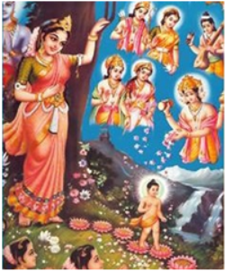
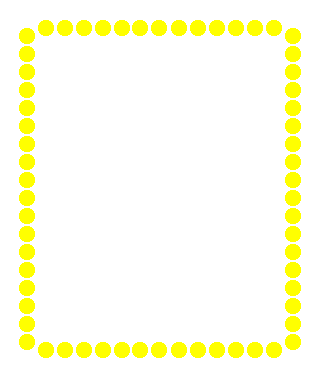
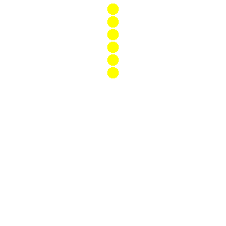

Digital Vesak Zone
ඩිජිටල් වෙසක් කලාපය
බෝසතාණන් වහන්සේගේ උපත, බුද්ධත්වයට පත්වීම හා භාග්යවතුන් වහන්සේගේ පරිණිර්වාණය
උතුම් තෙමඟුල
සිද්ධාර්ථ කුමාරෝත්පත්තිය
ලොවටම සෙත් හා සැනසුම ගෙනෙමින්, ශාක්ය රාජ සිංහාසනයේ රාජ කුමාරෙකු ලෙස ජාතක ලාභී වූ සිදුහත් කුමාරතෙමේ ලුම්බිණිය සල් උයනෙදී එදා අශෝක රෝද රුකෙකා රිසි ලෙස අල්ල ගත් ශ්රීමත් මහාමායා දේවිය කුසින් ශෝභාමාන ලෙස ලෝකයා දෙස බලා ඉපදුනු සේක.
උතුම් සම්මා සම්බුද්ධත්වය
බුද්ධගයාවේ ඇසතු බෝ රුකක් යට සිය ජීවිතය ගෙවූ ආදිත්ය රශ්මිය හා ශීතල සිය මදිය දෙසෙහිම ලෝකෝත්තර ඥාන රශ්මිය ලබා, සිය සිත් ගිනි ගත් මාරයා පරාජය කොට, සිය ඇසිල්ල ගලා ගිය කෙලෙස් නසා, ලොවට ශ්රේෂ්ඨ වූ සම්බුද්ධ ඥාන රශ්මිය ලැබ ලෝවැඩ සිනාඉක පාර ෙනෑ.
මහා පරිනිර්වාණය
කුසිනාරා නුවර මල්ල රජදරුවන්ගේ උපවත්තන සල් උයනෙදී, සල් ගස් දෙකක් අතර සාදාගත් ශේෂ සිවිරෙකෙදී, ස්ව-ස්කාරී රාජ සිරුරු, ලොව ශ්රේෂ්ඨ ධර්ම ශාසනය ඔහු ඉදිරියෙහිම ගෙනෙමින් සිය මහා ශ්රාවකයන් ලා, "ශ්රී වැඩ ධර්මමෙහි ශ්රේෂ්ඨ ලෙස ගමන් කරව!" ලෙස ශ්රේෂ්ඨ වූ අනුශාසනාව ලබාදී, ලෝකෝත්තර මහා නිවන් රශ්මිය ලැබූ සේක.